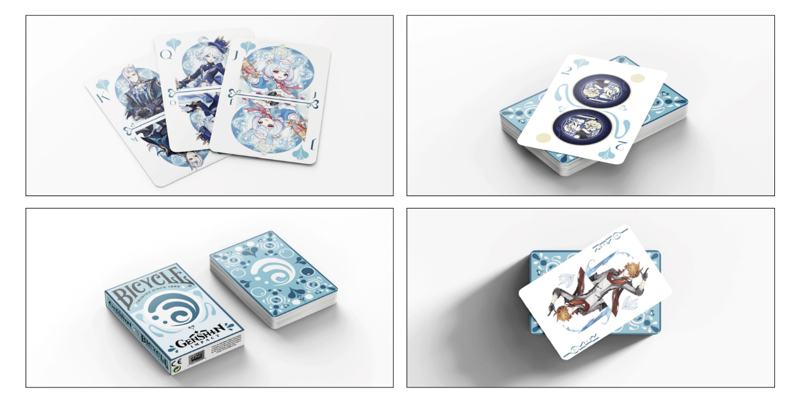

CONCEVOIR
Cartes Bicycle

Ce projet a été réalisé seule en cours d’infographie. L’objectif était de concevoir une nouvelle version d’un jeu de cartes de la marque Bicycle en créant un univers graphique complet autour d’un thème personnel.
J’ai choisi de m’inspirer du jeu Genshin Impact et plus particulièrement de l’élément Hydro. À partir de cette idée, j’ai conçu une série de cartes représentant des personnages associés à cet élément, en développant une direction artistique cohérente autour de tons bleutés.
L’ensemble des cartes a été réalisé sur Illustrator. J’ai conçu les différentes cartes du jeu (numérotées ainsi que figures comme roi, reine et joker), en adaptant les éléments graphiques pour garder une cohérence visuelle globale. La principale difficulté était la construction de la direction artistique et la mise en place d’un système visuel cohérent sur l’ensemble des cartes.
AC 12.01 : Concevoir un produit ou un service.